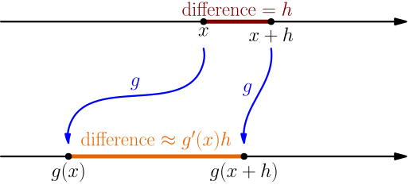
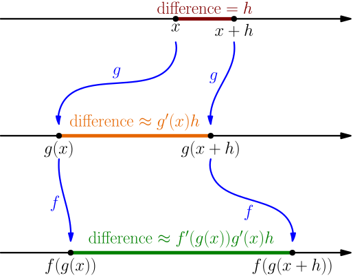

Chain Rule¶
We calculate $\frac{d}{dx} f(g(x))$ assuming that the derivatives $f'(g(x))$ and $g'(x)$ exist. The result is known as the chain rule. This derivative rule derivation is the longest one, so I broke it into several parts. Feel free to skip some of this if it's too boring; other derivative rule derivations aren't as boring as this one, and learning to use the result of this derivation is more important than the derivation itself.
The idea¶
Let $\approx$ denote an approximation. Later we will figure out whether the approximations are accurate enough for our purposes, but for presenting the idea of this derivation, the $\approx$ sign is good enough.
The definition of derivative says that $$ g'(x) = \lim_{h \to 0} \frac{g(x+h)-g(x)}{h}, $$ so if $h \approx 0$, then $$ g'(x) \approx \frac{g(x+h)-g(x)}{h}. $$ Multiplying both sides by $h$ gives $$ g(x+h)-g(x) \approx g'(x)h. $$ For the chain rule, this is a useful way to think about the derivative. If you change the input of $g$ by $h$, then the output changes by approximately $g'(x)h$.

For the chain rule, we do a similar thing again, but with $f$ instead of $g$, $g(x)$ instead of $x$, and $g'(x)h$ instead of $h$.

We get $$ f(g(x+h))-f(g(x)) \approx f'(g(x))g'(x)h, $$ and that leads to $$ \frac{f(g(x+h))-f(g(x))}{h} \approx f'(g(x))g'(x), $$ so maybe the derivative of $f(g(x))$ should be $f'(g(x))g'(x)$. To be sure about it, we need to ensure that the approximations we do when writing the $\approx$ signs are accurate enough to produce the correct result.
In this awesome video, 3blue1brown explains this idea very nicely, starting at about 8:42. I recommend watching that, and actually I got this idea from there. While watching, keep in mind that
- 3blue1brown's $dx$ is same as our $h$,
- 3blue1brown's $d(x^2)$ is same as our $(x+h)^2-x^2$,
- 3blue1brown uses equal signs when explaining this, but it would be better to use the $\approx$ sign,
- in the video, 3blue1brown uses the fact that the derivative of $\sin(x)$ is $\cos(x)$, which we will derive later, and
- all of this is just an idea, we still need to ensure that the approximations are accurate enough.
Estimating the errors¶
Consider the approximation $$ g(x+h)-g(x) \approx g'(x)h. $$ Let $E_g(h)$ denote the error in this approximation. It's what we get by subtracting the left and right side of this approximate equation, so $$ E_g(h) = \Bigl( g(x+h)-g(x) \Bigr) - g'(x)h. $$ We notice that $$ \begin{align} \lim_{h \to 0} \frac{E_g(h)}{h} &= \lim_{h \to 0} \frac{g(x+h)-g(x)-g'(x)h}{h} \\ &= \lim_{h \to 0} \left( \frac{g(x+h)-g(x)}{h} - \frac{g'(x)h}{h} \right) \\ &= \lim_{h \to 0} \frac{g(x+h)-g(x)}{h} - \lim_{h \to 0} g'(x) \\ &= g'(x) - g'(x) = 0. \end{align} $$ We also get $$ g(x+h) = g(x) + g'(x)h + E_g(h), $$ so to calculate $g(x+h)$, we calculate $g(x)$, then add the approximate difference $g'(x)h$, and then also take in account the error that we did in the approximation. This makes sense.
With $f$, we can do a similar approximation, but with $g(x)$ instead of $x$. That gives $$ f(g(x)+n)-f(g(x)) \approx f'(g(x))n, $$ where we also use $n$ instead of $h$, because we already used $h$ when working with $g$. By doing the same things for this approximation, we get a function $E_f$ satisfying $$ \begin{align} \lim_{n \to 0} \frac{E_f(n)}{n} &= 0, \\ f(g(x)+n) &= f(g(x)) + f'(g(x))n + E_f(n). \end{align} $$
Putting it all together¶
With the approximation of $g(x+h)$, we get $$ f(g(x+h)) = f(g(x) + g'(x)h + E_g(h)). $$ To avoid writing the same thing repeatedly several times, let $$ q(h) = g'(x)h + E_g(h). $$ With this, we have $$ f(g(x+h)) = f(g(x) + q(h)), $$ and by choosing $n=q(h)$ in the approximation of $f(g(x)+n)$, we get $$ f(g(x+h)) = f(g(x)) + f'(g(x))q(h) + E_f(q(h)). $$ By subtracting $f(g(x))$ on both sides, we get $$ f(g(x+h))-f(g(x)) = f'(g(x))q(h) + E_f(q(h)). $$ Now we can calculate $$ \begin{align} \frac{d}{dx} f(g(x)) &= \lim_{h \to 0} \frac{f(g(x+h))-f(g(x))}{h} \\ &= \lim_{h \to 0} \frac{f'(g(x))q(h) + E_f(q(h))}{h} \\ &= \lim_{h \to 0} \left( f'(g(x)) \frac{q(h)}{h} + \frac{E_f(q(h))}{h} \right) \\ &= f'(g(x)) \left( \lim_{h \to 0} \frac{q(h)}{h} \right) + \lim_{h \to 0} \frac{E_f(q(h))}{h}. \end{align} $$ Now we just need to calculate the two limits. For the first one, we get $$ \begin{align} \lim_{h \to 0} \frac{q(h)}{h} &= \lim_{h \to 0} \frac{g'(x)h + E_g(h)}{h} \\ &= \lim_{h \to 0} \left( g'(x) + \frac{E_g(h)}{h} \right) \\ &= \underbrace{\lim_{h \to 0} g'(x)}_{g'(x)} + \underbrace{\lim_{h \to 0} \frac{E_g(h)}{h}}_0 \\ &= g'(x), \end{align} $$ so $$ \frac{d}{dx} f(g(x)) = f'(g(x))g'(x) + \lim_{h \to 0} \frac{E_f(q(h))}{h}. $$ The other limit is a bit tricky, and we'll do that next.
Tricky limit¶
The idea with this trick is to turn the known limit (see above) $$ \lim_{n \to 0} \frac{E_f(n)}{n} = 0 $$ into continuity. We do this by defining a new function $$ C(n) = \begin{cases} \frac{E_f(n)}{n}, & \text{if $n \ne 0$}; \\ 0, & \text{if $n = 0$}, \\ \end{cases} $$ which is just like $\frac{E_f(n)}{n}$, but "extended" so that $C(0)$ is defined. We have $$ \lim_{n \to 0} C(n) = \lim_{n \to 0} \frac{E_f(n)}{n} = 0 = C(0), $$ so the function $C$ is continuous at $0$; this was the whole purpose of defining the $C$ function.
We also have $$ C(n)n = E_f(n), $$ because $E_f(0) = 0$ (why?), and if $n \ne 0$, then $C(n) = \frac{E_f(n)}{n}$. By using this with $n=q(h)$, we can calculate the tricky limit, and it gives \begin{align} \lim_{h \to 0} \frac{E_f(q(h))}{h} &= \lim_{h \to 0} \frac{C(q(h))q(h)}{h} \\ &= \left( \lim_{h \to 0} C(q(h)) \right) \underbrace{\left( \lim_{h \to 0} \frac{q(h)}{h} \right)}_{g'(x)} \\ &= C\left( \lim_{h \to 0} q(h) \right) g'(x) \\ &= C\left( \lim_{h \to 0} \left( \frac{q(h)}{h} h \right) \right) g'(x) \\ &= C\left( \left( \lim_{h \to 0} \frac{q(h)}{h} \right) \left( \lim_{h \to 0} h \right) \right) g'(x) \\ &= \underbrace{C\Bigl( g'(h) \cdot 0 \Bigr)}_{C(0)=0} g'(x) = 0. \end{align} Here we used the fact that $C$ is continuous at $0$ by bringing the limit inside it. This is why we needed continuity.
The result¶
If $g'(x)$ and $f'(g(x))$ exist, then $$ \frac{d}{dx} f(g(x)) = f'(g(x))g'(x). $$ This is known as the chain rule.
Examples:
- By choosing $f(x)=x^2$ and $g(x)=3x+1$, we get $f'(x)=2x$ and $g'(x)=3$. The chain rule says that $$ \frac{d}{dx} (3x+1)^2 = 2(3x+1) \cdot 3 = 18x+6. $$ We can also verify this without the chain rule by calculating $$ (3x+1)^2 = (3x)^2 + 2(3x)1 + 1^2 = 9x^2 + 6x + 1, $$ and with these rules, we get $$ \begin{align} \frac{d}{dx} \left( 9x^2+6x+1 \right) &= 9 \cdot \frac{d}{dx} x^2 + 6 \cdot \frac{d}{dx} x + \frac{d}{dx} 1 \\ &= 9 \cdot 2x + 6 \cdot 1 + 0 \\ &= 18x + 6. \end{align} $$
- Similarly, we get $$ \frac{d}{dx} (3x+1)^{10} = 10(3x+1)^9 \cdot 3 = 30(3x+1)^9. $$ This would be very difficult to calculate without the chain rule, unlike the previous example.
- By choosing $f(x)=x^2$ and $g(x)=x^3$, we get $f'(x)=2x$ and $g'(x)=3x^2$ with the power rule. The chain rule gives $$ \frac{d}{dx} \left(x^3\right)^2 = 2(x^3)(3x^2) = 6x^5, $$ but on the other hand, $(x^3)^2 = x^6$, and the power rule gives the same result.